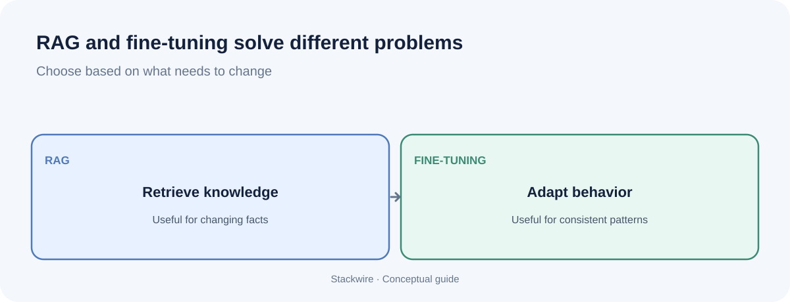

SaaS and AI
RAG vs fine-tuning: which should you use for an AI application?
If an AI assistant gives outdated answers or ignores your preferred format, you may be looking at two very different problems. Retrieval-augmented generation (RAG) gives a model access to external information at answer time. Fine-tuning changes model behavior through additional training. Choosing the right approach can save engineering time and avoid unnecessary infrastructure.

Start with RAG when an application must answer questions from private, current or frequently updated documents and show where information came from. Consider fine-tuning when the model consistently needs a specific style, format or task behavior. Combine them only when evaluation shows you need both current knowledge and specialized behavior.
What is RAG?
RAG stands for retrieval-augmented generation. Before the model writes an answer, the application searches a knowledge source, selects relevant passages and includes them in the model's context. The model then generates a response using that retrieved material.
A basic RAG flow looks like this:
- A user asks a question.
- The application searches an index or knowledge base for relevant passages.
- The retriever returns selected text and metadata, such as document title or URL.
- The application adds those passages to the model prompt.
- The model produces an answer, ideally with references to the supporting sources.
The model's weights are not updated when a document is added. The knowledge base and index are maintained separately. This makes RAG useful when company policies, product documentation or other source material changes over time.
What is fine-tuning?
Fine-tuning is additional training on examples that demonstrate the behavior you want from a model. Depending on the model and training method, it can help with a repeated task, response style, specialized format or domain-specific pattern.
Fine-tuning is not the same as uploading a folder of documents for the model to search. Training examples can influence the model's behavior, but a fine-tuned model does not automatically provide a reliable, traceable copy of every fact in those documents. If a policy changes, you need to consider whether the training data and model need to be updated.
RAG vs fine-tuning: the practical comparison
| Question | RAG | Fine-tuning |
|---|---|---|
| What changes? | Information supplied at request time | Model weights through additional training |
| Best fit | Answering from private or changing knowledge | Consistent task behavior, style or format |
| Fresh information | Update the source and index | May require new training and deployment |
| Source citations | Can return retrieved source references | Not provided automatically |
| Infrastructure | Ingestion, indexing and retrieval | Training data, training workflow and model management |
| Common failure | Retrieves irrelevant or incomplete context | Learns inconsistent patterns or fails to generalize |
When should you choose RAG?
RAG is a strong starting point when the answer depends on information that is private, long, detailed or regularly updated. Examples include:
- A customer support assistant that answers from current product manuals.
- An internal company assistant that searches approved policies and procedures.
- A SaaS product that answers questions using each customer's uploaded documents.
- A research assistant that needs to show the sources behind an answer.
- A help centre chatbot whose content team updates articles every week.
RAG also gives you a place to enforce document-level permissions. The application should filter retrieval based on the signed-in user's access rights. Do not assume that adding a vector database automatically makes private information secure.
When should you consider fine-tuning?
Fine-tuning becomes more relevant when the application has a repeatable task and you have good examples of desired outputs. Consider testing it when:
- The model repeatedly misses a strict output format despite clear instructions.
- You need consistent classification or extraction behavior for a narrow task.
- Your product has a well-defined writing style or response pattern.
- You have enough representative, reviewed examples to train and evaluate the change.
Do not fine-tune just because an answer is wrong. First check whether the model received the right facts, whether the prompt was clear and whether the task is suitable for the model. Fine-tuning cannot reliably compensate for missing or outdated source information.
Why RAG can still give incorrect answers
RAG is not a guarantee of factual accuracy. The retrieval system may return the wrong passage, miss the relevant document, retrieve stale content or include so much text that the useful detail gets lost. The model can also misunderstand the retrieved material.
Measure retrieval and answer quality separately. Ask whether the correct source was found, whether the selected passage supports the answer, whether the answer uses only supported claims and whether the citation points to the right place. Build a test set from real questions and known correct sources.
Can you use RAG and fine-tuning together?
Yes. A hybrid system can retrieve up-to-date facts with RAG and use a fine-tuned model to perform a specialized task or follow a consistent output pattern. But it adds complexity: you must maintain retrieval, training data, model versions and evaluation for the combined system.
Use a hybrid architecture only when you can identify two separate needs. For example, a support assistant may need to retrieve the latest policy and consistently format its answer into a required support template. RAG addresses the current policy; fine-tuning may help with the repeated response behavior.
A decision checklist before you build
- Write down what is actually wrong: missing facts, poor retrieval, inconsistent format or weak task performance.
- Collect 30–100 representative questions and the expected evidence or outputs. This is a starting dataset, not a universal statistical threshold.
- Try a clear prompt and a small RAG prototype if private or current information is needed.
- Measure retrieval relevance, factual support, citation correctness, latency and cost.
- Consider fine-tuning only if the remaining failure is a repeatable behavior problem and you have suitable examples.
- Re-run the same tests after every significant prompt, model, retrieval or training change.
Frequently asked questions
Is RAG better than fine-tuning?
Neither is universally better. RAG is usually the more direct starting point for question-answering over changing or private documents. Fine-tuning is aimed at improving specific model behaviors. Choose based on the failure you need to fix.
Does RAG train the AI model?
No. RAG retrieves external information and adds it to the model's input at request time. The underlying model weights are not changed by ordinary retrieval.
Does fine-tuning add company knowledge to a model?
Training can influence how a model responds to examples, but it is not a dependable document lookup system and does not automatically provide citations. For frequently updated company facts, use a controlled knowledge source and retrieval.
Is RAG cheaper than fine-tuning?
It depends on usage, model choice, retrieval infrastructure, training costs and maintenance. RAG adds retrieval and context tokens to requests. Fine-tuning may involve dataset preparation, training and model hosting costs. Compare total cost for your actual workload.
Can a RAG chatbot hallucinate?
Yes. It can retrieve irrelevant passages or generate claims that the retrieved material does not support. Test retrieval quality, require evidence-based answers and provide a safe way to say when the source material is insufficient.
Also read how to calculate AI API costs and how to price an AI feature.